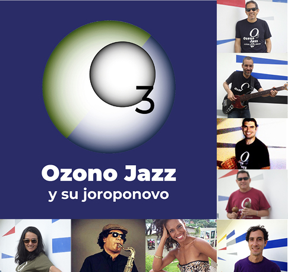
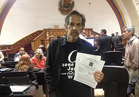
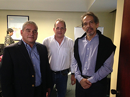

ozonojazz.com +58 414 396 7463 ozonojazz@gmail.com
~Música Ecológica de Venezuela~
Ozono Jazz con su joroponovo, es un grupo de música original
con sentido y función por el ambiente

Emilio Mendoza, guitarra; Churrogreen, bajo;
Ómer Pérez, batería; Lizardo Domínguez, maracas;
Pedro Ceu, guitarra; Nayibe Berroterán, danza;
Francisco Issá, saxos; Marcy Durán, voz;
MÚSICA
| • Audio vía distrokid.com – clic en la portada | OZONOJAZZ EN VIVO (2021) Octeto • INFO CD |
| • Audio vía YouTube – clic en su nombre | GUARAPICHE BLUES (2020) Cuarteto • INFO CD |
| • Información sobre cada CD - clic en INFO CD | LABERINTO (2017) Dúo • INFO CD |
| •
En físico - Mercadolibre
o mandar un correo |
NATURA (2009, 2012) Sexteto • INFO CD |
~~~~~~~~~~~~~~~~~~~~~~~~~~~~~~~~~~~
Luchamos por dos causas:1. El Sonido de la Tierra
Música como Basura Sónica
Llevamos a cabo activismo ecológico a través de nuestra música para proteger el "Sonido de la Tierra." Nos concentramos en lograr la reducción de la contaminación sónica o ruido humano en el planeta Tierra y, especialmente, la "contaminación musical". Realizamos donaciones así como promoción a organizaciones que ayudan al cuidado del ambiente. En el último CD Guarapiche Blues se incluyen tres piezas sobre el silencio.
2. Tragedias Negras
Derrame en el Río Guarapiche
Denunciamos las “tragedias negras” de la industria petrolera ya que tenemos un país hermoso que estamos destruyendo. Somos uno de los más grandes productores de petróleo y hemos colaborado con la contaminación del globo por más de cien años, causando además terribles accidentes ecológicos. Ahora lo repetimos con la minería del oro. Como venezolanos, le debemos al mundo y en especial a nuestro bello país, todos nuestros esfuerzos por cuidar el ambiente y a sus seres. Enfocamos el último CD en la tragedia del derrame de petróleo sobre el Río Guarapiche, como homenaje a María Rivas y su bella voz.
~~~~~~~~~~~~~~~~~~~~~~~~~~~~~~~~~~~~~~CAMPAÑAS POR EL SONIDO DE LA TIERRA:1. ¡PLAYAS SIN BULLA!
Para disminuir la "contaminación musical" en las playas venezolanas:
Venezuela tiene sus playas sucias de ruido: Ir a las playas en este país es una tortura sonora. ¡Insoportable! En el 2012, nos declaramos activistas ecológicos contra el ruido y promulgamos la campaña ¡Playas sin Bulla! para que no se escuche música amplificada en las playas del país y menos, varias músicas amplificadas al mismo tiempo.
2. ¡OIGAMOS EL SILENCIO!
Lograr la enmienda de la Constitución Nacional para resguardar el Sonido de la Tierra o "ensona" (entorno sonoro natural). Ozono Jazz se enfoca desde el 27 de abril, 2016, Día Mundial del Ruido, en fomentar el cuidado y preservación del ensona como meta nacional y mundial:
Se ha entregado la Carta de Solicitud y los "Considerandos" al Presidente de la Comisión de Ambiente, Diputado Gregorio Graterol Roque, los días 11-10-2018, 27-03-2019, 24-04-2019. El 03-04-2019 se le entregó en sus manos en el Hemiciclo Protocolar, Asamblea Nacional, Caracas, en sesión plenaria. El día 07-08-2019 Emilio asistió a la Comisión Permanente de Ambiente, AN, con derecho de palabra en plenaria donde se entregó formalmente la solicitud de enmienda. Desde entonces, se han realizado varias visitas a la Comisión solicitando el resultado por escrito de la solicitud, sin respuesta hasta ahora, así como solicitudes a la Alcaldía Los Salias.
puede también bajarlos en PDF.
Modificación de la Ordenanza de Ruidos molestos y nocivos.
 
Si aprecia nuestra música y misión, puede ayudarnos a través de una donación.
BsS: Banco Mercantil, Cta Corriente: 01050024981024267520,
Emilio Mendoza Guardia C.I. 3186000, +58 414 396 7463
US$: Zelle emiliomen@gmail.com • Paypal emiliomen2007@hotmail.com
Ozono Jazz está representado por Producciones
C.A.
© 2023 Copyright por Emilio Mendoza. Todos los Derechos Reservados
{kind=link}